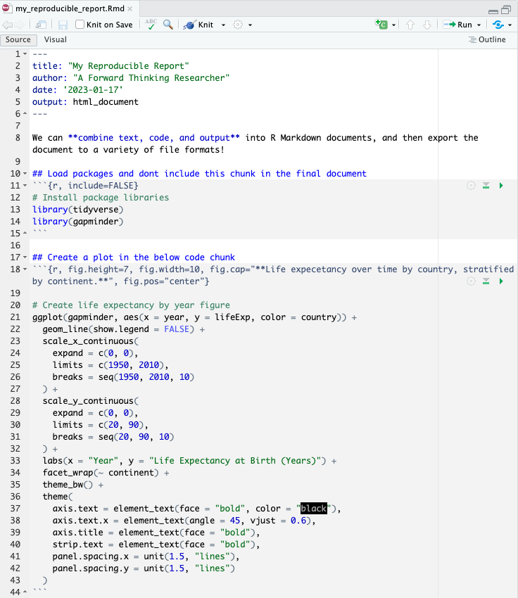

Introduction to R Markdown
ID 529: Data Management and Analytic Workflows in R
Dean Marengi | Tuesday, January 17th, 2023
Learning objectives
- Understand the advantages of R Markdown as tool for reproducible research
- Learn about the basic components that make up R Markdown documents
- YAML headers
- Plain text
- Code chunks
- Learn how to use R Markdown to generate reproducible reports
- Integrating different elements of a typical report including descriptive text, analysis results and visualizations, inline quantitative statements
- Organizing R Markdown files for research collaboration
- Exporting reports to different output formats (e.g.,
.html,.docx,.pdfand more)
R Markdown Example Available on GitHub
- Simple Example: https://github.com/dmarengi/sample-rmd
- Includes the
.Rmdfile we will discuss during the lecture - Create a copy of the repository on your local computer
- Clone the repository to your local device
- Alternatively, Click <> Code > Download Zip
- Clone the repository to your local device
- Includes the
- Jarvis’ Example: https://github.com/jarvischen01/id529-regression-models
- Working with regression models
- Integration of
gtsummary,sjPlot,stargazer, andggstatsplotin R Markdown
Background
First, a little about Markdown
- Markdown is a markup language used to format plain text documents (it’s not unique to
R)- Uses a simple, human-readable syntax to apply formatting
- Contrasts with other common tools used for text formatting (e.g., Microsoft Word documents)
- Formatting appears simple, but is complicated ‘under the hood’
- Widely used, and allows for easy conversion to different file types (e.g., PDFs, html files, etc.)
- Markdown can be used to generate:
- Reports (as we’ll discuss)
- Books
- Slides
- Websites
- And more!
Note: Markdown is the syntax you use to edit README files on GitHub!

# Markdown: a love story
There's a beauty in the *simplicity* of formatting text with `Markdown`! It's capable of giving so much, ***while asking for so little***. Not like those text formatting tools from "**Big Word Processor,**" with all of their fancy bells and whistles.
## What's great about Markdown, you ask?
- It's easy to read and write
- It's platform-agnostic
- No specific software required
- Highly compatiable with a range of tools
- Overall, less fuss!
Rendered output on the next slide!
Markdown: A love story
There’s a beauty in the simplicity of formatting text with Markdown! It’s capable of giving so much, while asking for so little. Not like those text formatting tools from “Big Word Processor”, with all of their fancy bells and whistles.
What’s great about Markdown, you ask?
- It’s easy to read and write
- It’s platform-agnostic
- No specific software required
- Highly compatible with a range of tools
- Overall, less fuss!
So, what is R Markdown?
- R Markdown is an extension of Markdown
- Integrates with the R Studio IDE
- Allows R users to combine into one document:
- Markdown formatted text
- R code chunks
- Analysis results and visualizations
- Mathematical expressions
- “knit” documents to different output formats (HTML files, PDFs, Word Documents, etc.)
Great tool for promoting transparency and reproducible research, as it allows researchers to easily consolidate their code, results, and interpretations into a single document!


R Markdown Components
The Components of R Markdown Documents
- R Markdown files (
.Rmd) are plain text files designed to contain three types of content:- Plain text for narrative
- Code chunks
- Metadata to inform how the file is rendered and exported (YAML Header)
- Code chunks
- Delimited by ```
{r}and ```
- Delimited by ```
- YAML header
- Section included at the top of the
.Rmdfile - Metadata delimited by
---and---
- Section included at the top of the
- Plain text
- Written throughout the document
- Markdown used to apply text formatting

YAML Header
---
title: "Reproducible Research"
author: "A prudent researcher"
date: "2023-01-17"
output: html_document
---- The YAML header is used to customize the R Markdown document
- Takes key-value pairs to specify document options and settings
- E.g., title, author, date, output format, document class or other parameters
- For HTML files, a CSS style sheet may also be referenced in the YAML Header
- YAML header information is used to configure behavior of the ‘R Markdown engine’ to convert documents into a final output format
YAML Header: Some output formats
---
title: "Reproducible Research"
author: "A prudent researcher"
date: "2023-01-17"
output:
pdf_document: default
html_document: default
word_document: default
---- Output formats for the .Rmd file can be specified in the YAML header
- In the above example, we can knit our Rmd file into any of the specified formats (
pdf,html, ordocx) - Note that the indentation is meaningful for YAML headers!
- Indentation creates a hierarchy and structure for YAML header information
- Incorrect indentation will cause the YAML parser to fail when rendering the
.Rmdfile
Markdown syntax: Headings
Markdown text
# Level 1 header
## Level 2 header
### Level 3 header
#### Level 4 headerRendered text
Markdown syntax: Basic text formatting
Markdown text
*italics* or _italics_
**bold** or __bold__
***bold and italic*** or
___bold and italic___
~~strikethrough~~
superscripts^2^
Rendered text
italics or italics
bold or bold
bold and italic or
bold and italic
strikethrough
superscripts2
Markdown syntax: Lists
Markdown text
- item 1
- item 2
- item 3
- item 3.1
- item 3.2
- item 3.2.1
1. item 1
2. item 2
3. item 3
- item 3.1
- item 3.2
- item 3.2.1
Rendered text
- item 1
- item 2
- item 3
- item 3.1
- item 3.2
- item 3.2.1
- item 1
- item 2
- item 3
- item 3.1
- item 3.2
- item 3.2.1
Markdown syntax: Lists (alternative)
Markdown text
* item 1
* item 2
* item 3
+ item 3.1
+ item 3.2
+ item 3.2.1
1. item 1
2. item 2
3. item 3
+ item 3.1
+ item 3.2
+ item 3.2.1
Rendered text
- item 1
- item 2
- item 3
- item 3.1
- item 3.2
- item 3.2.1
- item 1
- item 2
- item 3
- item 3.1
- item 3.2
- item 3.2.1
Markdown syntax: Blockquotes
Markdown text
> "Block quotes are neat."
>
> -- HoduRendered text
“Block quotes are neat.”
– Hodu
Markdown syntax: Hyperlinks
Markdown text
https://id529.github.io
[ID 529 Website (current window)](https://id529.github.io)
[ID 529 Course Website (new window)](https://id529.github.io){target="_blank"}Rendered text
Markdown syntax: Embedding Images
Images from file storage
Images from web sources

Code chunks
- Code chunks can be inserted throughout the R Markdown document
- To insert a code chunk click the green code chunk button in the top right corner of .Rmd document
- Alternatively, use a keyboard shortcut!
- Mac: command + option + i
- PC: control + alt + i
- All code chunks are run, in the order they appear, when the file is rendered
Code chunks: Chunk options
- Output from each code chunk can be customized
- Set using
knitrchunk options- Included between the curly braces
{r ...}
- Included between the curly braces
- A few commonly used options include:
include = FALSE: Exclude chunk code/outputecho = FALSE: Show code output, but not the codewarning = FALSE: Don’t include warning messagesfig.height = ...: Set output figure height (in.)fig.width = ...: Set output figure width (in.)
See the resources linked below for more; there are a lot!
Code chunks: Global options
- Instead of setting
chunk optionsfor each code chunk, you can alternatively set global chunk options- That is, you can apply a configuration or option across all code chunks in the
Rmddocument
- Global settings can be overridden by setting options on individual code chunks
- That is, you can apply a configuration or option across all code chunks in the
A note on LaTeX
Note: If you want to create pdf reports, you will need to install a LaTeX distribution. For R, it’s recommended that the TinyTex distribution be used. To do this, you can install the tinytex R package. Check out the resources linked below for more details.
Embedding Mathenatical Expressions
- Within R Markdown files, you can also incorporate mathematical expressions
- Uses
LaTeXsyntax- Expressions wrapped in single dollar signs
$..$are displayed “in-line” - Expressions wrapped in double dollar signs
$$..$$render as stand-alone equations
- Expressions wrapped in single dollar signs
- The syntax can be confusing at first, but will make sense the more you use it!
$$
\begin{equation}
\hat{Y}_i = \hat{\beta}_0 + \hat{\beta}_1 X_i + \hat{\epsilon}_i
\end{equation}
$$This is some text with an in-line expressions like $\hat{Y}_i$ and $\hat{\beta}_1 X_i$. Pretty cool, right?
\[ \begin{equation} \hat{Y}_i = \hat{\beta}_0 + \hat{\beta}_1 X_i + \hat{\epsilon}_i \end{equation} \] This is some text with an in-line expressions like \(\hat{Y}_i\) and \(\hat{\beta}_1 X_i\). Pretty cool, right?
Let’s look at an Rmd file in R Studio!
Resources
Introductory Information
- Overview and linked resources: https://pkgs.rstudio.com/rmarkdown/articles/rmarkdown.html
- Interactive Tutorial: https://rmarkdown.rstudio.com/lesson-1.html
- HTML Rmd themes: https://www.datadreaming.org/post/r-markdown-theme-gallery/
Resources to quickly reference
- Cheat Sheet: https://raw.githubusercontent.com/rstudio/cheatsheets/main/rmarkdown.pdf
- Syntax Guide: https://www.rstudio.com/wp-content/uploads/2015/03/rmarkdown-reference.pdf?_ga=2.253280527.746852327.1673881938-1383057973.1651956305
More comprehensive resources
- R Markdown Definitive Guide: https://bookdown.org/yihui/rmarkdown/
- R Markdown Cookbook: https://bookdown.org/yihui/rmarkdown-cookbook/